Proposta · Sicoob Credimonte13.10.2026

Desenvolvimento de líderes comunicadores para o Sicoob Credimonte.
Role para verO Programa Liderança com Propósito foi desenvolvido para fortalecer e profissionalizar a atuação dos líderes do Sicoob Credimonte, aprimorando suas competências de comunicação, relacionamento e gestão de pessoas.
A proposta é desenvolver líderes comunicadores, capazes de inspirar, orientar, motivar e construir relações de confiança, utilizando a comunicação como uma ferramenta estratégica para fortalecer equipes, impulsionar resultados e transformar a cultura organizacional.
Mais do que desenvolver competências, o programa busca transformar a maneira como os líderes se comunicam, se relacionam e exercem sua liderança, promovendo relações mais saudáveis, equipes mais engajadas e resultados mais consistentes.

O programa contempla Diretoria e Presidência, Gestores Táticos e Liderança de Base, considerando os diferentes desafios, responsabilidades e necessidades de desenvolvimento de cada grupo.
Visão estratégica, influência, tomada de decisão e responsabilidade da alta liderança na construção da cultura organizacional.
Gestão de pessoas, condução de feedbacks, alinhamento de expectativas, conversas corajosas e desenvolvimento de equipes.
Aplicação prática da comunicação, autoconhecimento, relacionamento entre diferentes perfis, postura profissional, colaboração e protagonismo.
Os treinamentos serão interligados e complementares, trabalhando competências e ferramentas em comum, mas com abordagens, dinâmicas e aprofundamentos específicos para cada nível. A proposta é desenvolver uma linguagem compartilhada de liderança em toda a instituição, garantindo que os participantes conheçam as ferramentas trabalhadas nos demais grupos e fortalecendo o alinhamento entre os diferentes níveis hierárquicos.
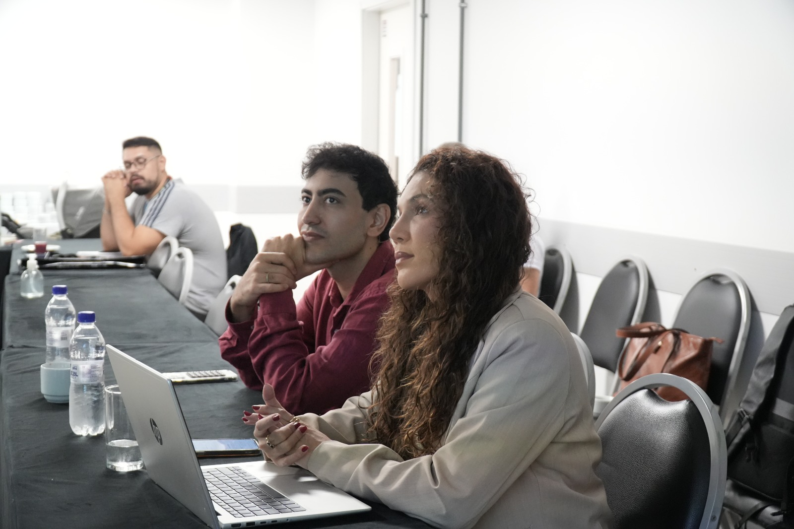
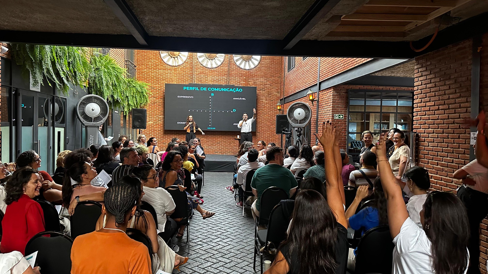
21 horas presenciais · três grupos · conduzidos por dois Terapeutas da Comunicação
Nesta primeira etapa, serão realizados treinamentos de Liderança com Propósito direcionados aos três níveis de liderança do Sicoob Credimonte, utilizando ferramentas, experiências e dinâmicas práticas da metodologia Voz do Ser.
Comunicação, cultura e estratégia. Um treinamento com foco no posicionamento estratégico da liderança, no fortalecimento da cultura organizacional e na construção de uma comunicação capaz de inspirar e direcionar os demais níveis da instituição.
Gestão e desenvolvimento de equipes. Voltado ao desenvolvimento das competências de gestão, comunicação e relacionamento, fortalecendo o papel dos gestores como elo entre a estratégia institucional e a atuação das equipes.
Comunicação e relacionamentos na prática. Uma experiência prática e dinâmica voltada ao desenvolvimento das competências essenciais de comunicação, relacionamento e liderança no cotidiano profissional.
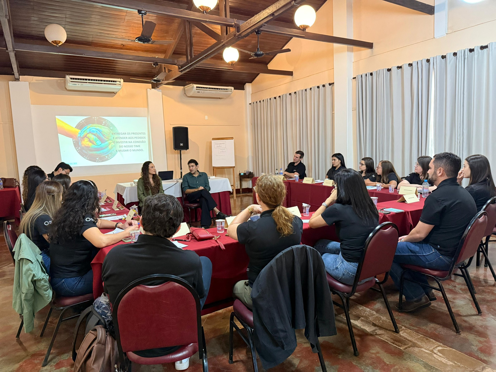
30 encontros online de 2 horas · 1 por mês para cada nível de liderança · 60 horas no ano
Após os treinamentos presenciais, o programa tem uma segunda etapa dedicada ao acompanhamento contínuo dos três níveis de liderança, garantindo que as competências desenvolvidas sejam colocadas em prática e aprimoradas ao longo do ano. Cada encontro terá uma temática específica, aprofundando os conteúdos da primeira etapa e oferecendo um espaço de escuta, troca de experiências e consultoria aplicada aos desafios reais dos participantes.
As mentorias acontecerão separadamente para cada um dos três níveis de liderança, respeitando as necessidades e os desafios específicos de cada grupo.
Janeiro: treinamentos presenciais de Liderança com Propósito (Etapa 1). Fevereiro a novembro: mentorias mensais online de continuidade, com um encontro por mês para cada nível de liderança.
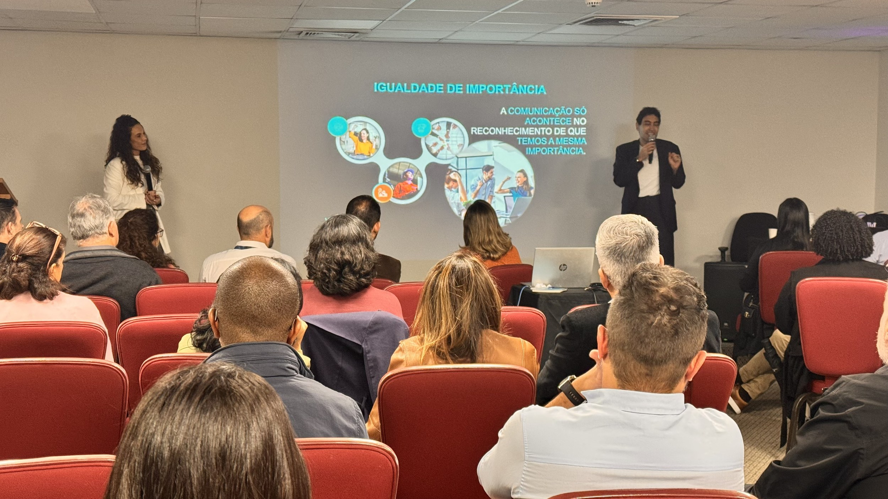
Os conteúdos serão trabalhados de forma prática e adaptados às necessidades de cada nível de liderança, considerando os desafios e as oportunidades identificados ao longo do programa.
21 horas presenciais · avaliação, evolução e resultados
A terceira etapa marca o encerramento do programa, com novos treinamentos presenciais direcionados aos três níveis de liderança. Após um ano de desenvolvimento e acompanhamento, os participantes serão convidados a revisitar as competências trabalhadas, avaliar sua evolução e identificar os resultados alcançados, reconhecendo as transformações em sua comunicação, seus relacionamentos e sua atuação como líderes.
Assim como na primeira etapa, os encontros serão realizados separadamente para cada nível de liderança, com abordagens específicas para suas responsabilidades e desafios.

A base do programa em um único mês: os três níveis de liderança treinados presencialmente, com uma linguagem comum de comunicação e liderança para toda a instituição.
Os treinamentos acontecem em janeiro, conduzidos por dois Terapeutas da Comunicação especializados em Liderança com Propósito.
Une a imersão presencial inicial ao acompanhamento mensal dos três níveis de liderança ao longo do ano, transformando o aprendizado em prática contínua.
Os três treinamentos presenciais descritos acima, para Diretoria e Presidência, Gestores Táticos e Liderança de Base.
Um encontro mensal para cada nível de liderança, de fevereiro a novembro, com temática específica, espaço de escuta e consultoria aplicada aos desafios reais.
81 horas: 21 horas presenciais e 60 horas online, ao longo de 11 meses de projeto.
O ciclo inteiro de desenvolvimento: formação presencial, acompanhamento mensal durante o ano e um encerramento presencial para avaliar a evolução e os resultados alcançados.
Os três treinamentos presenciais de abertura, um para cada nível de liderança.
Um encontro mensal por grupo, de fevereiro a novembro, com acompanhamento dos três níveis de liderança.
Avaliação da evolução, reconhecimento dos resultados e construção dos próximos passos da liderança.
102 horas: 42 horas presenciais e 60 horas online, ao longo de 12 meses de projeto.
Os valores já consideram os descontos aplicados ao conjunto. Os custos operacionais cobrem deslocamento, alimentação e hospedagem da equipe de 6 pessoas em cada ida presencial.

O Voz do Ser é um Instituto de Comunicação com Propósito, autoconhecimento e mudança de mentalidade. Atuamos nas áreas clínica, organizacional e educacional, oferecendo terapias, cursos e treinamentos em comunicação, inteligência emocional e desenvolvimento pessoal.
Nossa abordagem une ciência, prática e espiritualidade, para promover transformação de relacionamentos e expansão consciencial.


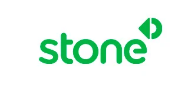


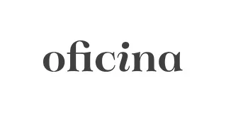

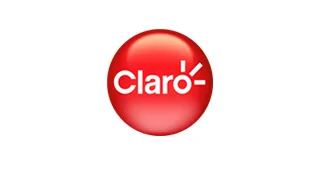


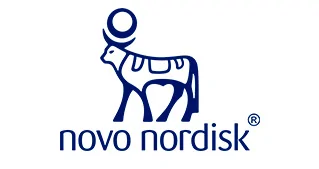


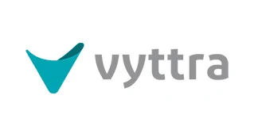


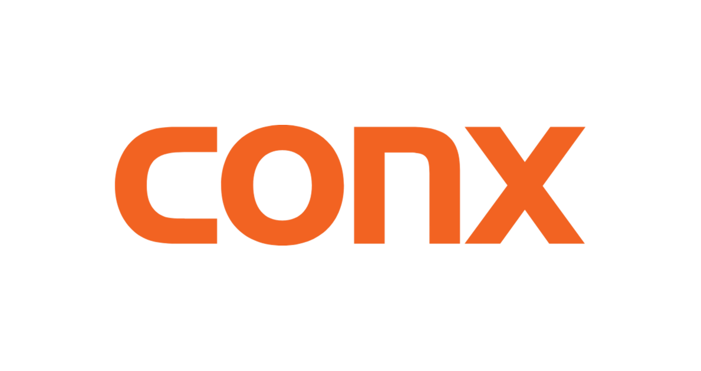

Estamos à disposição para detalhar a estratégia que fizer mais sentido para o Sicoob Credimonte e alinhar as datas.